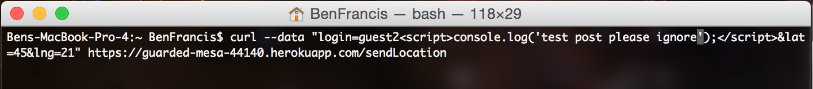
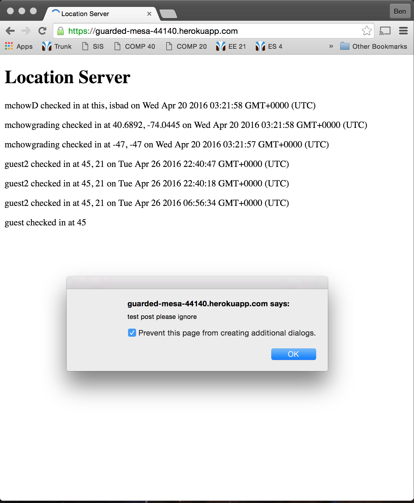
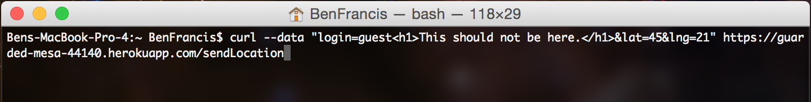
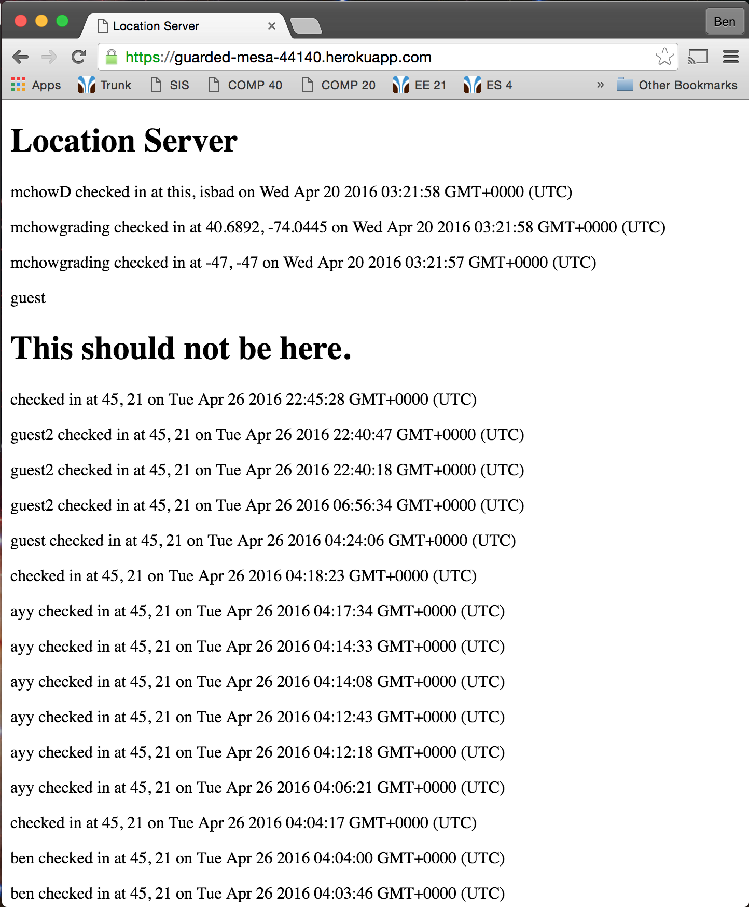
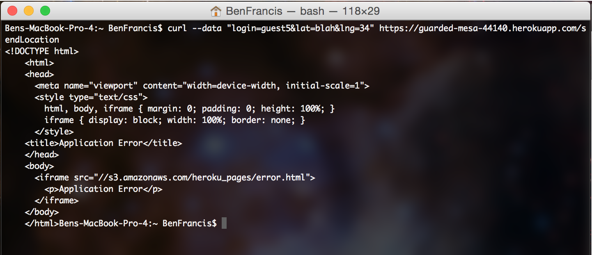
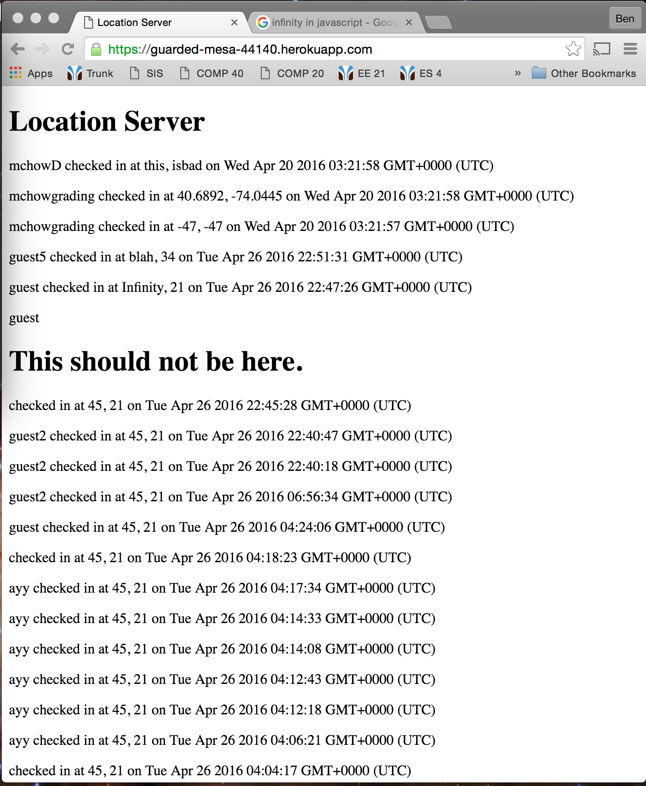

This is a security analysis of a web application created by Cam Flowers that retrieves a user's current location, and uses the Google Maps API to display this location on a map. The application also places the location of all other users and nearby landmarks of the map. This security analysis is primarily interested in finding vulnerabilities in the server side API that this web application uses.
First, typical vulnerabilities were investigated without looking at the source code. This is also known as black box testing. After this was completed, the source code was examined in an effort to find additional vulnerabilities. This is known as white box testing. In this security analysis, the only tool used was the "curl" command. This was used to POST data to the /sendLocation API. All of the vulnerabilities were found using this method.
Several vulnerabilities were found with just the /sendLocation API. The server was not written to fully check the user input. This means that users were able to insert anything they wanted into the database. This includes, but is not limited to, malicious scripts using JavaScript, unwanted HTML content, and invalid data. All of these vulnerabilities will provide issues for any user trying to use this web application.
The first vulnerability found in this analysis was cross site scripting. It was found that any script can be placed in the 'login' parameter of the POST to the '/sendLocation' API. This can be seen below. In this case, an alert script was inserted that will pop up with a window saying 'test post please ignore.' The POST request completes as expected.
When users try to view the database information using the '/' API, the script that was inserted will run when the page tries to display login. This is due to the fact that the '/' API blindly appends anything in the login field to the HTML page that is is going to display. The resulting alert image that resulted from the inserted script can be seen below.
Despite this being a very severe issue, there is a very easy fix. Before placing the user’s login information into the database, the API should check for several specific characters. Most importantly, the API should remove '<' and '>' as this will break any scripts that are potentially in the user input. These characters can be replaced with < and > respectively.
This issue was also found with the '/sendLocation' API. After successfully inserting scripts into the login parameter, it was suspected that HTML content could also be injected in the same manner. The command below was executed. It inserted a large, obnoxious message as a h1 into the database. This is a slightly less sever issue compared to the XSS issue, as much more malicious things can be done with a script compared to injected HTML content. The HTML injection can only add content, while a script could be used to remove or manipulate other content displayed on the webpage.
When viewing the database using the '/' API, the HTML content that was previous inserted into the database is blindly displayed in much the same way that the scripts in Issue 1 were executed. The resulting page can be seen below. Notice the large 'This should not be here.' message proceeding the 'guest' login.
This issue can be fixed in the exact same issue as the XSS issue; simply remove and replace key characters such as '<' and '>'. This will break the HTML format and the attempted injection will just be displayed as a string.
This was yet another issue with the 'sendLocation' API. In this case, after examining the code, it was found that the API does not check to make sure that the latitude and longitude are numbers. It simply inserts them into the database and then performs operations on them assuming that they are strings. This results in an application error. The command and application error can be seen below.
It is important to note that the application error occurs after the values are already inserted into the database. This means that any user trying to use the API will get application errors when they try to display locations on a Google Map when the latitude or longitude are not numbers. The inserted data can be seen below. Notice the value 'blah' for guest5 in the list of checkins.
This issue is not very difficult to fix. Before doing anything with the latitude and longitude, the API should make sure that these values are indeed valid numbers. After this check, if it is found that the values are not strings, the API can respond to the user with the 'Something is wrong with your data' JSON file. This would prevent any other users' applications from breaking via invalid data.
There were several vulnerabilities with the '/sendLocation' API which resulted in various errors and interruptions in the user experience. All of the vulnerabilities can be easily fixed by more carefully processing user input. Additionally, in future applications it would likely be a good idea to secure the API such that only authenticated users can POST data to the server. It is dangerous to allow anyone to POST data to the server, as there are many malicious users out on the web looking to exploit vulnerable websites and web applications. Seeing as these vulnerabilities are relatively easy to fix, it will only cost the client about $100 to fix.